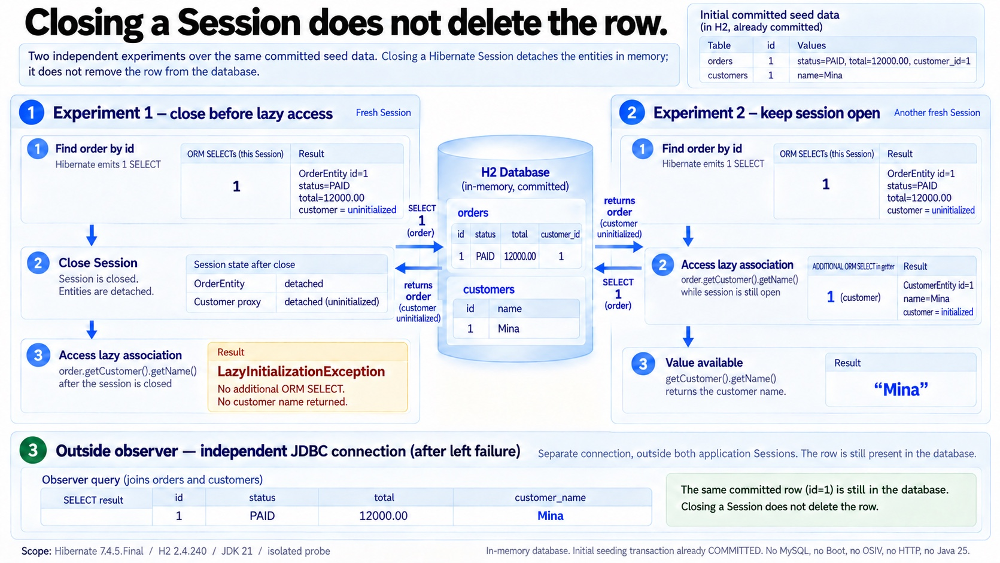

DTO · 조회 범위와 공개 계약
Session이 닫히면 DB 행도 사라질까?
격리 추가 실험 · Hibernate 7.4.5.Final / H2 2.4.240 / JDK 21 / Jackson 3.1.5 / MapStruct 1.6.3 · W09Proof의 closed/open/observer 실험
find 뒤 연관은 미초기화
추가 fixture를 새 Session에서 find했습니다. 주문 본체를 읽어도 LAZY customer와 items는 아직 초기화하지 않았음을 직접 검사했습니다.

지금의 값과 조회 경계
함께 읽을 코드
강조는 설명하는 코드 구간입니다. 독립 H2 실험이며 HTTP 요청을 보내지 않습니다.
추가 fixture의 주문 id=1·PAID·고객 Mina·total=12000.00을 사용합니다. 실패한 것은 닫힌 Session을 통한 지연 초기화입니다. 별도 JDBC 연결의 관찰 SELECT는 ORM SQL 계수와 분리합니다. 각 새 Session 실험을 같은 연결의 연속 상태로 섞지 않습니다. MySQL·Boot·OSIV 요청·실제 HTTP·Java 25·Spring Data Repository는 미실행입니다.
추가 실행 검증 로그 보기
PASS와 SQL은 격리된 추가 실험의 검증 증거입니다. 직렬화 중간 장면은 전체 실행의 종단 관측을 설명하며 getter 줄 계측 로그가 아닙니다. SQL의 ? 바인딩값은 기록되지 않았습니다.
추가 실험 전체 코드·생성 mapper·관측 기록
원문 엔티티와 mapper를 별도 H2 메모리 DB에서 실행했습니다. 아래 fixture에는 추가 입력과 관찰 코드가 있습니다. 원문 단건 JPQL은 직접 Hibernate로 실행했고 목록 쿼리는 추가 변형입니다. MySQL·Spring Data Repository·Boot·OSIV 요청·HTTP·Java25는 실행하지 않았습니다.
격리 추가 실험 · Session/JDBC/Jackson/DTO/쿼리/record
package example.order;
import java.math.BigDecimal;
import java.nio.file.*;
import java.lang.reflect.*;
import java.sql.*;
import java.util.*;
import org.hibernate.*;
import org.hibernate.boot.*;
import org.hibernate.boot.registry.*;
import org.hibernate.resource.jdbc.spi.StatementInspector;
import tools.jackson.databind.json.JsonMapper;
/** 원문 엔티티/mapper를 별도 H2 메모리 DB에서 관찰한다. Boot/OSIV/HTTP 실험이 아니다. */
public class W09Proof {
static final List<String> sql = new ArrayList<>();
static final Map<String,Object> results = new LinkedHashMap<>();
static int checks;
static void set(Object object,String name,Object value) {
try { Field field=object.getClass().getDeclaredField(name); field.setAccessible(true);field.set(object,value); }
catch(ReflectiveOperationException e){throw new RuntimeException(e);}
}
static void check(String label,boolean valid) {
if(!valid)throw new AssertionError(label);checks++;System.out.println("PASS "+label);
}
static List<String> finishSql(String phase) {
List<String> copy=List.copyOf(sql);results.put(phase+"Sql",copy);sql.clear();return copy;
}
static String causes(Throwable error) {
StringBuilder out=new StringBuilder();for(Throwable e=error;e!=null;e=e.getCause()){out.append(e.getClass().getName()).append(" -> ");if(e.getCause()==e)break;}return out.toString();
}
public static void main(String[] args)throws Exception {
JsonMapper mapper=JsonMapper.builder().build();
StandardServiceRegistry registry=new StandardServiceRegistryBuilder()
.applySetting("hibernate.connection.driver_class","org.h2.Driver")
.applySetting("hibernate.connection.url","jdbc:h2:mem:w09_concept;DB_CLOSE_DELAY=-1")
.applySetting("hibernate.hbm2ddl.auto","create-drop")
.applySetting("hibernate.generate_statistics",true)
.applySetting("hibernate.default_batch_fetch_size",0)
.applySetting("hibernate.cache.use_second_level_cache",false)
.applySetting("hibernate.session_factory.statement_inspector",(StatementInspector) query->{sql.add(query);return query;})
.build();
try(SessionFactory factory=new MetadataSources(registry).addAnnotatedClass(OrderEntity.class)
.addAnnotatedClass(OrderItemEntity.class).addAnnotatedClass(CustomerEntity.class).buildMetadata().buildSessionFactory()) {
try(Session session=factory.openSession()){
var tx=session.beginTransaction();
for(int i=1;i<=3;i++){
CustomerEntity customer=new CustomerEntity();set(customer,"name",i==1?"Mina":"Customer-"+i);set(customer,"email","customer"+i+"@example.com");set(customer,"internalMemo","internal-"+i);session.persist(customer);
OrderEntity order=new OrderEntity();set(order,"status","PAID");set(order,"total",new BigDecimal(i==1?"12000.00":"24000.00"));set(order,"customer",customer);session.persist(order);
OrderItemEntity item=new OrderItemEntity();set(item,"order",order);session.persist(item);
}
tx.commit();
}
sql.clear();
OrderEntity detached;
try(Session session=factory.openSession()) {
detached=session.find(OrderEntity.class,1L);
check("closed-initial-customer-lazy",!Hibernate.isInitialized(detached.getCustomer()));
check("closed-initial-items-lazy",!Hibernate.isInitialized(detached.getItems()));
}
finishSql("closedFind");
boolean lazy=false;try { detached.getCustomer().getName(); }catch(LazyInitializationException e){lazy=true;results.put("closedCause",e.getClass().getName());}
check("closed-session-lazy-error",lazy);check("closed-error-no-query",sql.isEmpty());finishSql("closedFailure");
try(Connection observer=DriverManager.getConnection("jdbc:h2:mem:w09_concept");Statement statement=observer.createStatement();ResultSet row=statement.executeQuery("select o.id, o.status, o.total, c.name from orders o join customers c on c.id=o.customer_id where o.id=1")) {
check("closed-independent-observer-row",row.next() && row.getLong(1)==1L && row.getString(2).equals("PAID") && row.getBigDecimal(3).compareTo(new BigDecimal("12000.00"))==0 && row.getString(4).equals("Mina"));
results.put("independentObserver",Map.of("id",row.getLong(1),"status",row.getString(2),"total",row.getBigDecimal(3),"customerName",row.getString(4),"scope","separate JDBC connection AFTER Session close/lazy failure; its own SELECT is not part of ORM query counters"));
}
try(Session session=factory.openSession()) {
var tx=session.beginTransaction();OrderEntity order=session.find(OrderEntity.class,1L);finishSql("openFind");
check("open-before-customer-lazy",!Hibernate.isInitialized(order.getCustomer()));
String name=order.getCustomer().getName();check("open-customer-name",name.equals("Mina"));
check("open-getter-one-query",finishSql("openGetter").size()==1);
tx.commit();
}
// 열린 Session의 직접 직렬화. OSIV/HTTP 요청은 아니다.
try(Session session=factory.openSession()) {
var tx=session.beginTransaction();OrderEntity order=session.find(OrderEntity.class,1L);sql.clear();
boolean serializationFailed=false;String chain="";
try { mapper.writeValueAsString(order); }catch(Throwable e){serializationFailed=true;chain=causes(e);}
check("entity-serialization-fails",serializationFailed);results.put("serializationCauseChain",chain);
List<String> serializedSql=finishSql("entitySerialization");results.put("entitySerializationSqlCount",serializedSql.size());
check("entity-serialization-triggered-query",!serializedSql.isEmpty());tx.rollback();
}
// 순환 자체는 프록시를 제외한 뒤 같은 원문 객체 그래프로 별도 검사한다.
OrderEntity cycle=new OrderEntity();set(cycle,"status","PAID");set(cycle,"total",new BigDecimal("12000.00"));
CustomerEntity plainCustomer=new CustomerEntity();set(plainCustomer,"name","Mina");set(plainCustomer,"email","m@example.com");set(plainCustomer,"internalMemo","internal-only");set(cycle,"customer",plainCustomer);
OrderItemEntity cycleItem=new OrderItemEntity();set(cycleItem,"order",cycle);set(cycle,"items",new ArrayList<>(List.of(cycleItem)));
boolean cycleFailed=false;try{mapper.writeValueAsString(cycle);}catch(Throwable e){cycleFailed=true;results.put("plainCycleCauseChain",causes(e));}
check("plain-bidirectional-cycle-fails",cycleFailed);
String customerJson=mapper.writeValueAsString(plainCustomer);results.put("directCustomerJson",customerJson);
check("direct-customer-internal-visible",mapper.readTree(customerJson).get("internalMemo").asString().equals("internal-only"));
record CustomerPublic(String name) {}
String publicCustomer=mapper.writeValueAsString(new CustomerPublic(plainCustomer.getName()));
check("customer-dto-only-name",mapper.readTree(publicCustomer).size()==1 && mapper.readTree(publicCustomer).get("name").asString().equals("Mina"));results.put("publicCustomerJson",publicCustomer);
sql.clear();List<OrderSummary> summaries;
try(Session session=factory.openSession()) {
var tx=session.beginTransaction();List<OrderEntity> orders=session.createQuery("from OrderEntity o order by o.id",OrderEntity.class).list();
check("list-three-orders",orders.size()==3);check("list-root-one-query",finishSql("listRoot").size()==1);
summaries=orders.stream().map(OrderSummaryMapper::from).toList();check("manual-three-customer-queries",finishSql("manualMapping").size()==3);tx.commit();
}
results.put("listSummaries",summaries);
check("dto-values-after-close",summaries.get(0).customerName().equals("Mina")&&summaries.get(0).total().compareTo(new BigDecimal("12000.00"))==0);
sql.clear();String summaryJson=mapper.writeValueAsString(summaries.get(0));check("dto-serialization-no-query",sql.isEmpty());
check("dto-excludes-internal-fields",!mapper.readTree(summaryJson).has("internalMemo")&&!mapper.readTree(summaryJson).has("email")&&!mapper.readTree(summaryJson).has("customer")&&!mapper.readTree(summaryJson).has("items"));results.put("summaryJson",summaryJson);
try(Session session=factory.openSession()) {
var tx=session.beginTransaction();sql.clear();List<OrderEntity> orders=session.createQuery("from OrderEntity o order by o.id",OrderEntity.class).list();finishSql("mapstructRoot");
OrderSummaryMapStruct mapping=new OrderSummaryMapStructImpl();List<OrderSummary> mapped=orders.stream().map(mapping::toSummary).toList();
check("mapstruct-values-equal",mapped.equals(summaries));check("mapstruct-three-customer-queries",finishSql("mapstructMapping").size()==3);tx.commit();
}
OrderSummary singleProjection;
try(Session session=factory.openSession()) {
var tx=session.beginTransaction();sql.clear();OrderSummary single=session.createQuery("select new example.order.OrderSummary(o.id, o.status, c.name, o.total) from OrderEntity o join o.customer c where o.id = :id",OrderSummary.class).setParameter("id",1L).getSingleResult();
singleProjection=single;check("original-single-projection-values",single.equals(summaries.get(0)));check("original-single-projection-one-query",finishSql("originalSingleProjection").size()==1);tx.commit();
}
sql.clear();String projectionJson=mapper.writeValueAsString(singleProjection);
check("projection-serialization-after-close",sql.isEmpty() && mapper.readTree(projectionJson).equals(mapper.readTree(summaryJson)));results.put("projectionJson",projectionJson);
try(Session session=factory.openSession()) {
var tx=session.beginTransaction();sql.clear();List<OrderSummary> projected=session.createQuery("select new example.order.OrderSummary(o.id, o.status, c.name, o.total) from OrderEntity o join o.customer c order by o.id",OrderSummary.class).list();
check("projection-values-equal",projected.equals(summaries));check("projection-one-query",finishSql("projection").size()==1);tx.commit();
}
}finally {StandardServiceRegistryBuilder.destroy(registry);}
record ItemList(List<String> items) {}
List<String> original=new ArrayList<>(List.of("one"));ItemList shallow=new ItemList(original);original.add("two");check("record-shallow-change",shallow.items().equals(List.of("one","two")));
ItemList copied=new ItemList(List.copyOf(original));original.add("three");check("record-copy-stays-two",copied.items().size()==2);
results.put("checks",checks);results.put("scope","Hibernate7.4.5.Final/H2 2.4.240/JDK21/Jackson3.1.5/MapStruct1.6.3; isolated additional fixture; no MySQL/Boot/OSIV/HTTP/Java25; three distinct customers and orders; batching0/cacheoff");
Files.writeString(Path.of(args[0],"execution.json"),mapper.writerWithDefaultPrettyPrinter().writeValueAsString(results)+"\n");
}
}
MapStruct1.6.3의 실제 생성 구현
package example.order;
import java.math.BigDecimal;
import javax.annotation.processing.Generated;
import org.springframework.stereotype.Component;
@Generated(
value = "org.mapstruct.ap.MappingProcessor",
comments = "version: 1.6.3, compiler: IncrementalProcessingEnvironment from gradle-java-compiler-worker-9.8.0.jar, environment: Java 21.0.6 (Amazon.com Inc.)"
)
@Component
public class OrderSummaryMapStructImpl implements OrderSummaryMapStruct {
@Override
public OrderSummary toSummary(OrderEntity order) {
if ( order == null ) {
return null;
}
String customerName = null;
Long id = null;
String status = null;
BigDecimal total = null;
customerName = orderCustomerName( order );
id = order.getId();
status = order.getStatus();
total = order.getTotal();
OrderSummary orderSummary = new OrderSummary( id, status, customerName, total );
return orderSummary;
}
private String orderCustomerName(OrderEntity orderEntity) {
CustomerEntity customer = orderEntity.getCustomer();
if ( customer == null ) {
return null;
}
return customer.getName();
}
}
관측 SQL·JSON·범위
{
"closedFindSql" : [ "select oe1_0.id,oe1_0.customer_id,oe1_0.status,oe1_0.total from orders oe1_0 where oe1_0.id=?" ],
"closedCause" : "org.hibernate.LazyInitializationException",
"closedFailureSql" : [ ],
"independentObserver" : {
"total" : 12000.00,
"scope" : "separate JDBC connection AFTER Session close/lazy failure; its own SELECT is not part of ORM query counters",
"status" : "PAID",
"customerName" : "Mina",
"id" : 1
},
"openFindSql" : [ "select oe1_0.id,oe1_0.customer_id,oe1_0.status,oe1_0.total from orders oe1_0 where oe1_0.id=?" ],
"openGetterSql" : [ "select ce1_0.id,ce1_0.email,ce1_0.internalMemo,ce1_0.name from customers ce1_0 where ce1_0.id=?" ],
"serializationCauseChain" : "tools.jackson.core.exc.StreamConstraintsException -> ",
"entitySerializationSql" : [ "select ce1_0.id,ce1_0.email,ce1_0.internalMemo,ce1_0.name from customers ce1_0 where ce1_0.id=?", "select i1_0.order_id,i1_0.id from order_items i1_0 where i1_0.order_id=?" ],
"entitySerializationSqlCount" : 2,
"plainCycleCauseChain" : "tools.jackson.core.exc.StreamConstraintsException -> ",
"directCustomerJson" : "{\"email\":\"m@example.com\",\"internalMemo\":\"internal-only\",\"name\":\"Mina\"}",
"publicCustomerJson" : "{\"name\":\"Mina\"}",
"listRootSql" : [ "select oe1_0.id,oe1_0.customer_id,oe1_0.status,oe1_0.total from orders oe1_0 order by oe1_0.id" ],
"manualMappingSql" : [ "select ce1_0.id,ce1_0.email,ce1_0.internalMemo,ce1_0.name from customers ce1_0 where ce1_0.id=?", "select ce1_0.id,ce1_0.email,ce1_0.internalMemo,ce1_0.name from customers ce1_0 where ce1_0.id=?", "select ce1_0.id,ce1_0.email,ce1_0.internalMemo,ce1_0.name from customers ce1_0 where ce1_0.id=?" ],
"listSummaries" : [ {
"id" : 1,
"status" : "PAID",
"customerName" : "Mina",
"total" : 12000.00
}, {
"id" : 2,
"status" : "PAID",
"customerName" : "Customer-2",
"total" : 24000.00
}, {
"id" : 3,
"status" : "PAID",
"customerName" : "Customer-3",
"total" : 24000.00
} ],
"summaryJson" : "{\"id\":1,\"status\":\"PAID\",\"customerName\":\"Mina\",\"total\":12000.00}",
"mapstructRootSql" : [ "select oe1_0.id,oe1_0.customer_id,oe1_0.status,oe1_0.total from orders oe1_0 order by oe1_0.id" ],
"mapstructMappingSql" : [ "select ce1_0.id,ce1_0.email,ce1_0.internalMemo,ce1_0.name from customers ce1_0 where ce1_0.id=?", "select ce1_0.id,ce1_0.email,ce1_0.internalMemo,ce1_0.name from customers ce1_0 where ce1_0.id=?", "select ce1_0.id,ce1_0.email,ce1_0.internalMemo,ce1_0.name from customers ce1_0 where ce1_0.id=?" ],
"originalSingleProjectionSql" : [ "select oe1_0.id,oe1_0.status,c1_0.name,oe1_0.total from orders oe1_0 join customers c1_0 on c1_0.id=oe1_0.customer_id where oe1_0.id=?" ],
"projectionJson" : "{\"id\":1,\"status\":\"PAID\",\"customerName\":\"Mina\",\"total\":12000.00}",
"projectionSql" : [ "select oe1_0.id,oe1_0.status,c1_0.name,oe1_0.total from orders oe1_0 join customers c1_0 on c1_0.id=oe1_0.customer_id order by oe1_0.id" ],
"checks" : 28,
"scope" : "Hibernate7.4.5.Final/H2 2.4.240/JDK21/Jackson3.1.5/MapStruct1.6.3; isolated additional fixture; no MySQL/Boot/OSIV/HTTP/Java25; three distinct customers and orders; batching0/cacheoff"
}
Spring Data projection · MapStruct1.6.3 · 공식 출처 확인2026-10-20. 격리실험에서 Spring Data Repository를 실행한 것은 아닙니다.
W09. DTO는 왜 쓰나
원문 전체 · 긴 코드·심화·자가점검·참고문헌
W09. DTO는 왜 쓰나 — 엔티티를 그대로 반환하면 생기는 일
Why & decisions · W09
이 문서에서 볼 내용
선택 이유와 설계 기준
DTO는 DB 객체를 꾸미는 보일러플레이트가 아니라 외부에 공개할 데이터 계약이다.
엔티티를 응답으로 내보내면 지연 로딩·쿼리 수·민감 정보·API 모양이 영속성 모델과 한 경로로 엮인다.
기본값은 API 경계에서 필요한 필드만 담은 응답 DTO를 반환하고, 조회가 단순하면 DTO 프로젝션으로 필요한 열만 읽는 것이다.
예제 기준: Java 25, Spring Boot 4.1.1, Spring Framework 7.0.9, Spring Data JPA 4.1.1.
011. 질문
첫 번째 장면은 게시글 상세 API를 만들 때다. findById 결과를 그대로 반환해 코드를 줄였더니, 로컬에서는 JSON에 작성자와 댓글까지 잘 나오다가 배포에서 500이 난다. 요청 처리가 끝난 뒤 Jackson이 아직 초기화되지 않은 연관 필드를 읽어 LazyInitializationException이 나거나, 반대로 요청 중 DB 연결이 살아 있어 직렬화하는 동안 쿼리가 실행된다.
두 번째는 양방향 관계가 있는 주문과 주문항목이다. 응답을 만들려고 주문을 반환하면 order.items[0].order.items...처럼 객체 그래프가 순환한다. JSON 변환이 실패하거나, 순환 참조를 피하려 임시 애노테이션을 붙인 뒤 어느 화면의 응답에서 필드가 사라졌는지 찾는다.
세 번째는 “엔티티 필드 하나 추가했을 뿐”인데 API 응답에 내부 메모나 비밀번호 해시가 나타나거나, 반대로 컬럼 이름을 정리했더니 모바일 앱 JSON 필드가 바뀌는 상황이다. 이때 DB 모델과 API 계약을 같은 타입으로 두면 변경의 파급 범위를 분리할 수 없다.
022. 짧은 답
- 엔티티는 영속성 컨텍스트가 추적하는 도메인·DB 모델이고, DTO는 호출 경계에 필요한 값을 전달하는 모양이다.
- 요청 DTO는 클라이언트가 제출할 값만 받고, 응답 DTO는 외부에 공개할 값만 담는다. 내부 DTO/Command는 외부 JSON 계약이 아니라 애플리케이션 유스케이스·모듈 사이에 별도 모양이 필요할 때 둔다.
- 일반 CRUD의 기본값은 record 응답 DTO다. 필드가 몇 개뿐이면 수동 변환이나 정적 팩토리로 만든다.
- 목록·검색처럼 읽기 전용이고 컬럼 선택이 중요하면 repository에서 DTO 프로젝션을 반환한다.
- 변환은 한 규칙으로 정한다. 단순한 API 조립은 Controller, 유스케이스 데이터 구성은 Service/조회 서비스, 반복적인 필드 매핑은 MapStruct가 적합하다.
- DTO를 계층마다 기계적으로 복제하지 않는다. 경계나 변경 이유가 다를 때만 타입을 나눈다.
- DTO도 N+1을 자동으로 해결하지 않는다. 먼저 필요한 데이터와 쿼리 범위를 정한 다음 DTO를 채운다.
033. 왜 그런가 — 원리
Spring MVC에서 @RestController 반환값은 HttpMessageConverter를 거쳐 응답 본문으로 바뀐다. Java 객체를 JSON으로 바꾸는 일은 Controller 메서드가 값을 돌려준 뒤에 진행된다. 즉, 엔티티를 반환하면 직렬화기가 엔티티의 getter를 따라가며 응답 필드를 결정한다. getter가 프록시나 지연 컬렉션에 닿으면 단순한 메모리 읽기가 아니라 ORM의 추가 조회가 될 수 있다.
sequenceDiagram
participant Client as "클라이언트"
participant Controller as "Controller"
participant Service as "Service"
participant Repository as "Repository"
participant DB as "데이터베이스"
participant Converter as "JSON 변환기"
Client->>Controller: "요청"
Controller->>Service: "조회 호출"
Service->>Repository: "엔티티 또는 DTO 조회"
Repository->>DB: "SQL 실행"
DB-->>Repository: "행 반환"
Repository-->>Service: "결과 반환"
Service-->>Controller: "응답 후보 반환"
Controller-->>Converter: "객체 반환값"
Converter->>DB: "엔티티 getter가 지연 연관을 읽으면 추가 SQL"
Converter-->>Client: "직렬화된 JSON 또는 오류"
생명주기 문제. JPA 지연 연관은 영속성 컨텍스트가 닫힌 뒤 초기화하려 하면 실패한다. Spring Boot의 spring.jpa.open-in-view 설정은 요청 처리 전체에 EntityManager를 바인딩하는 인터셉터를 등록한다. 켜져 있으면 직렬화 시점에도 조회가 가능해 예외가 잠복하는 대신 변환 단계에서 쿼리가 실행되어 위치와 개수가 잘 보이지 않는다.
Hibernate는 필요한 연관을 컨텍스트가 닫히기 전에 조회하라고 안내한다. hibernate.enable_lazy_load_no_trans는 기본 비활성화이며 안전하지 않은 설정이다. OSIV나 전역 eager 변경보다 유스케이스에 맞는 조회 범위를 명시한다.
객체 그래프와 계약 문제. 엔티티 연관관계는 객체 탐색과 DB 관계를 표현하지만 HTTP 응답은 클라이언트가 소비할 문서다. 양방향 탐색은 순환할 수 있고 내부 필드도 같은 객체에 있다. @JsonIgnore로 특정 API 문제를 엔티티에 막으면 직렬화 정책이 영속성 모델에 스며든다. DTO는 응답 필드를 API 경계에 고정해 엔티티 필드 추가가 자동 공개되지 않게 한다.
쿼리 비용 문제. 주문 50개를 읽은 뒤 고객·항목을 직렬화하며 별도 조회하면 N+1이 된다. 반대로 큰 그래프를 전부 eager로 가져오면 쓰지 않는 데이터와 조인 중복이 늘 수 있다. DTO도 쿼리 비용을 정해주지 않는다. fetch join, 명시적 fetch plan, DTO 프로젝션 중 화면에 맞는 조회를 고른다.
저장 스키마와 공개 계약의 변경 주기도 다르다. DB 컬럼 정규화나 내부 관리 필드 도입은 API 버전 변경과 같은 일이 아니다. 별도 응답 DTO를 두면 이름 변경·필드 제거·계산 필드·버전 호환성을 API 쪽에서 관리한다.
044. 선택지 비교
| 선택지 | 어떻게 동작 | 장점 | 단점 | 언제 쓰나 | 국내 실무에서 흔한가(근거 있으면) |
|---|---|---|---|---|---|
| 엔티티 직접 반환 | MVC 변환기가 엔티티 getter를 순회해 JSON 생성 | 코드가 가장 짧고 빠르게 시연 가능 | 지연 로딩·순환·민감 필드·쿼리 수·API 계약이 엮임 | 내부 프로토타입이나 외부 계약이 없는 제한된 단기 도구. 그래도 조회 범위를 검증 | 공개된 국내 사용 빈도 자료를 확인하지 못함 |
| 수동 매핑 / 정적 팩토리 | Service나 DTO의 from(entity)에서 필드를 직접 복사 | 변환 내용이 코드에 보이고 디버깅·리뷰가 쉬움 | 매핑 코드가 반복되고 필드 추가 시 놓칠 수 있음 | 필드가 적고 변환 규칙에 의미가 있을 때 기본 선택 | 정량 근거 미확인 |
| MapStruct | 애노테이션 프로세서가 컴파일 시 구현 클래스를 생성 | 매핑 오류를 컴파일 과정에서 드러내고 일반 Java 호출 코드 생성 | 빌드 설정·매핑 정의가 필요하고, 숨겨진 암묵 매핑은 별도 주의 | 많은 타입에 반복되는 명시적 변환, 여러 mapper 재사용 | 정량 근거 미확인 |
| ModelMapper | 런타임에 속성 이름과 매핑 설정을 바탕으로 객체 변환 | 빠른 초기 작성, 유사한 이름의 속성은 설정이 간결 | 런타임 규칙·설정에 동작이 좌우되어 잘못된 매핑을 실행 전 발견하기 어려움 | 기존 시스템이 채택했고 규칙을 검증·통제하는 경우 | 정량 근거 미확인 |
| Spring Data DTO 프로젝션 | repository 쿼리가 선택한 값으로 DTO 인스턴스를 구성 | 필요한 컬럼만 읽는 읽기 모델을 만들기 좋고 엔티티를 웹 계층까지 보내지 않음 | 생성자 순서·JPQL 생성자 표현식·조인 조건을 신경 써야 함 | 목록·검색·대시보드 등 읽기 중심 API | 정량 근거 미확인 |
| 인터페이스 프로젝션 | repository가 조회 결과를 projection 인터페이스로 감싼 값으로 제공 | 작은 조회의 선언이 짧고 닫힌 프로젝션은 필요한 속성 최적화 여지가 있음 | 중첩 속성은 조인을 유발할 수 있고, 계산·복잡한 API 계약에는 덜 명확 | 단순 목록 요약과 내부 조회 | 정량 근거 미확인 |
국내의 “흔함”은 블로그 예제 수나 개인 경험만으로 빈도를 단정하지 않았다. 조직별로 레거시 CRUD, 금융권 표준 프레임워크, 신규 제품 API의 제약이 다르므로 팀 안의 기본 패턴과 운영 요구를 확인하는 편이 낫다.
DTO와 프로젝션은 서로 배타적인 용어가 아니다. DTO는 전달하려는 값의 모양 또는 역할이고, 프로젝션은 조회 결과를 어떤 필드 집합으로 뽑을지에 관한 기술이다. DTO 클래스를 Spring Data의 클래스 기반 프로젝션으로 사용할 수 있다. QueryDSL도 조회의 select 단계에서 필요한 표현식을 선택해 결과 형태를 제한할 수 있다.
055. 코드로 보기
예시는 주문 요약 API 하나를 네 방식으로 구현한다. Spring Boot 4.1 / Framework 7 기준 API를 사용한다. 코드 조각은 파일 단위이며 프로젝트의 엔티티·DB 스키마에 맞춰 붙여야 한다. Spring 코드 미실행.
요청 DTO와 내부 명령은 응답 DTO와 목적이 다르다. HTTP 입력을 검증한 뒤 유스케이스 명령으로 옮기면 클라이언트가 엔티티의 소유자·상태 필드를 임의로 지정하지 못한다. Validation starter를 포함한 Spring 예제이며 요청 DTO에는 허용할 필드만 선언한다.
package example.order;
import jakarta.validation.constraints.NotBlank;
import jakarta.validation.Valid;
import org.springframework.web.bind.annotation.*;
record UpdateOrderRequest(@NotBlank String status) {}
record UpdateOrderCommand(String status) {}
interface OrderApplicationService {
void update(Long id, UpdateOrderCommand command);
}
@RestController
@RequestMapping("/orders")
public class OrderCommandController {
private final OrderApplicationService service;
public OrderCommandController(OrderApplicationService service) {
this.service = service;
}
@PatchMapping("/{id}")
public void update(@PathVariable Long id,
@Valid @RequestBody UpdateOrderRequest request) {
service.update(id, new UpdateOrderCommand(request.status()));
}
}이 예에서 요청 record는 Java 16에서 정식화된 기능이다(JEP 395). Java 25에서도 그대로 쓸 수 있다. 내부 명령을 따로 두는 건 요청 DTO를 받은 뒤 애플리케이션 계층의 입력 의미가 달라지는 경우에만 유용하다. 필드가 같다는 이유로 모든 프로젝트에서 세 타입을 기계적으로 복제할 필요는 없다.
공유 도메인 예시 — 직접 반환했을 때의 위험. 실제 엔티티에는 이보다 더 많은 내부 상태가 들어갈 수 있다.
// OrderEntity.java
package example.order;
import jakarta.persistence.*;
import java.math.BigDecimal;
import java.util.ArrayList;
import java.util.List;
@Entity
@Table(name = "orders")
public class OrderEntity {
@Id
@GeneratedValue(strategy = GenerationType.IDENTITY)
private Long id;
private String status;
private BigDecimal total;
@ManyToOne(fetch = FetchType.LAZY)
private CustomerEntity customer;
@OneToMany(mappedBy = "order", fetch = FetchType.LAZY)
private List<OrderItemEntity> items = new ArrayList<>();
protected OrderEntity() {}
public Long getId() { return id; }
public String getStatus() { return status; }
public BigDecimal getTotal() { return total; }
public CustomerEntity getCustomer() { return customer; }
public List<OrderItemEntity> getItems() { return items; }
}
// OrderItemEntity.java
package example.order;
import jakarta.persistence.*;
@Entity
@Table(name = "order_items")
public class OrderItemEntity {
@Id
@GeneratedValue(strategy = GenerationType.IDENTITY)
private Long id;
@ManyToOne(fetch = FetchType.LAZY)
private OrderEntity order;
protected OrderItemEntity() {}
public Long getId() { return id; }
public OrderEntity getOrder() { return order; }
}// CustomerEntity.java
package example.order;
import jakarta.persistence.*;
@Entity
@Table(name = "customers")
public class CustomerEntity {
@Id
@GeneratedValue(strategy = GenerationType.IDENTITY)
private Long id;
private String name;
private String email;
private String internalMemo;
protected CustomerEntity() {}
public String getName() { return name; }
public String getEmail() { return email; }
public String getInternalMemo() { return internalMemo; }
}다음 Controller는 짧아 보여도 응답의 구조와 로딩 시점 모두를 변환기가 결정하게 한다.
// OrderEntityController.java
package example.order;
import org.springframework.web.bind.annotation.*;
@RestController
@RequestMapping("/orders")
public class OrderEntityController {
private final OrderRepository orders;
public OrderEntityController(OrderRepository orders) {
this.orders = orders;
}
@GetMapping("/{id}")
public OrderEntity get(@PathVariable Long id) {
return orders.findById(id).orElseThrow();
}
}// OrderRepository.java
package example.order;
import org.springframework.data.jpa.repository.JpaRepository;
public interface OrderRepository extends JpaRepository<OrderEntity, Long> {}코드에서 OrderRepository는 JpaRepository<OrderEntity, Long>을 상속한다. 응답 JSON은 customer와 items에 접근하면서 지연 조회를 일으킬 수 있고, 항목의 order를 따라가면 순환할 수 있다.
CustomerEntity.email과 internalMemo도 같은 직렬화 대상으로 보일 수 있다. 실제로 노출될 필드는 serializer 설정 및 연관 상태에 따라 다르므로, “현재 JSON에서 안 보인다”는 사실은 보안 경계가 아니다.
선택 A — 직접 매핑. 전송할 필드와 조합 로직이 한 곳에서 명확하다. 짧은 필드 목록에는 가장 단순한 방법이다.
// OrderSummary.java
package example.order;
import java.math.BigDecimal;
public record OrderSummary(Long id, String status, String customerName,
BigDecimal total) {}
// OrderSummaryMapper.java
final class OrderSummaryMapper {
private OrderSummaryMapper() {}
public static OrderSummary from(OrderEntity order) {
return new OrderSummary(
order.getId(),
order.getStatus(),
order.getCustomer().getName(),
order.getTotal()
);
}
}여기서 getCustomer().getName()은 고객 이름을 채우려 고객 연관을 읽는다. 이 메서드를 Controller에서 호출하면 트랜잭션과 영속성 컨텍스트가 이미 닫혔을 수 있고, 여러 주문에 호출하면 N+1이 될 수 있다. 따라서 매핑 방법과 fetch 계획은 함께 결정한다. record는 데이터 운반체를 간결하게 표현하지만, 그 자체로 깊은 불변성이나 안전한 조회를 보장하지 않는다.
선택 B — MapStruct. 반복 매핑을 컴파일 시 생성된 구현에 맡긴다. 일반적인 속성 복사 코드가 만들어질 뿐, 어떤 SQL로 엔티티를 읽을지는 여전히 repository 쿼리의 책임이다.
// OrderSummaryMapStruct.java
package example.order;
import org.mapstruct.Mapper;
import org.mapstruct.Mapping;
@Mapper(componentModel = "spring")
public interface OrderSummaryMapStruct {
@Mapping(target = "customerName", source = "customer.name")
OrderSummary toSummary(OrderEntity order);
}MapStruct processor 의존성은 빌드에 추가해야 한다. componentModel = "spring"이면 생성 mapper를 Spring bean으로 사용할 수 있다. 이 매퍼 역시 customer.name getter를 호출하므로 지연 로딩과 조회 개수는 별도로 살펴야 한다. @Mapper 하나를 추가했다고 N+1이 사라지지 않는다.
선택 C — repository DTO 프로젝션. 요약 화면에 필요한 스칼라 값을 JPQL에서 바로 가져온다. 아래는 생성자 표현식 방식이다.
// OrderSummaryRepository.java
package example.order;
import java.util.Optional;
import org.springframework.data.jpa.repository.*;
import org.springframework.data.repository.query.Param;
public interface OrderSummaryRepository
extends org.springframework.data.repository.Repository<OrderEntity, Long> {
@Query("""
select new example.order.OrderSummary(
o.id, o.status, c.name, o.total
)
from OrderEntity o
join o.customer c
where o.id = :id
""")
Optional<OrderSummary> findSummaryById(@Param("id") Long id);
}이 쿼리는 응답에 필요한 항목을 직접 적는다. 프로젝트의 DTO 전체 이름과 생성자 인자는 쿼리와 맞아야 한다. Spring Data JPA 클래스 기반 프로젝션은 생성자를 사용하고, 생성자가 여러 개인 DTO라면 사용할 생성자를 표시해야 한다. DTO 메서드가 반환형과 호환되지 않거나 쿼리 문법이 어긋나면 런타임 쿼리 검증에서 실패할 수 있다. 목록 API에서는 정렬·페이지 처리와 함께 실행 계획 및 SQL을 확인한다.
인터페이스 프로젝션은 컬럼 별칭과 getter 이름으로 단순 결과를 표현해 선언이 짧다. 계산 규칙이나 외부 계약이 커지면 구체 타입인 DTO가 리뷰하기 쉽다. 중첩 projection은 연관 속성 전체가 조인될 수 있으므로 “인터페이스라서 자동으로 최소 컬럼만 조회한다”고 가정하지 않는다.
066. 실무에서는 실제로
신규 서비스. API 요청·응답 타입을 나누고 응답은 record로 시작한다. 단순 상세는 읽기 유스케이스에서 조회 후 매핑하고, 목록·검색은 클래스 프로젝션을 고려한다. Service와 HTTP 계약을 분리해야 하면 OrderSummary 같은 조회 모델을 두고 Controller가 응답 타입으로 옮긴다.
레거시 서비스. 전체 반환을 한 번에 치환하지 말고 민감 정보나 오류가 잦은 공개 API부터 DTO를 추가한다. SQL 로그와 JSON을 확인하며 화면 단위로 이전하고, Entity·Request·Response·Summary처럼 이름에 역할을 드러낸다.
SI·금융 프로젝트. 화면별 명세, 감사·접근통제, 변경 승인 절차가 있으면 계약 DTO가 필드 노출과 버전 관리에 유리하다. 모든 계층에 같은 VO/DTO를 복제할 필요는 없다. 팀 표준을 따르되 변환 지점을 명확히 한다.
스타트업·작은 팀. 정적 팩토리나 수동 매핑으로 시작하고 반복 매핑이 리뷰 비용이 될 때 MapStruct를 검토한다. ModelMapper의 런타임 이름 매칭은 API 보안·계약에서 허용되는지 확인한다.
변환 위치 기준. Controller는 얇은 HTTP 조립, Service는 권한·상태·유스케이스 계산, Repository/조회 컴포넌트는 읽기 전용 프로젝션에 적합하다. 응답 생성 중 지연 필드를 읽거나 Service에 Jackson 정책이 퍼지면 경계를 다시 정한다.
세부 주제는 Jackson 직렬화 → P16, JPA 연관관계 → P20, 계층 설계 → W02를 참조한다.
077. 흔한 오해와 실수
- “DTO로 바꾸면 N+1이 해결된다.” DTO 매핑이 연관 getter를 호출하면 쿼리는 그대로 발생한다. 요약 목록은 프로젝션이나 일괄 fetch를 사용하고, SQL 수와 실행 계획을 확인한다.
- “OSIV가 켜져 있으니 LazyInitializationException은 없다.” 요청 끝까지 지연 조회가 가능해져 오류가 쿼리 폭증으로 바뀔 수 있다. 직렬화가 DB 접근을 하지 않도록 응답 필드와 조회 계획을 맞춘다.
- “@JsonIgnore만 붙이면 엔티티 반환도 안전하다.” 한 순환 경로만 끊을 수 있을 뿐 민감 필드, API 변경 추적, 쿼리 수 문제는 남는다. 외부 응답의 허용 필드를 DTO로 지정한다.
- “요청 DTO에 엔티티 필드를 전부 복사하면 편하다.” 클라이언트가 role, ownerId, 내부 상태 등을 보내 바꾸는 대량 할당 문제가 생긴다. 요청 타입은 사용자가 수정 가능한 값만 받게 하고 서버가 권한과 소유자를 결정한다.
- “MapStruct면 매핑 문제가 컴파일에서 모두 잡힌다.” 생성 구현은 빠르고 명시적이지만 잘못 선언한 매핑 경로나 민감한 속성 선택까지 도메인 의미로 판별하진 않는다. 명시 매핑과 미매핑 정책을 정하고 응답 필드 변경을 리뷰한다.
- “record DTO는 완전히 불변이다.” record의 참조 필드는 재할당되지 않지만, 그 안의 List나 객체가 변할 수 있다. 외부에 불변 계약이 필요하면 복사·불변 컬렉션을 고려한다.
088. 자가점검 Q&A (면접 대비)
Q1. 엔티티를 JSON으로 반환할 때 운영에서만 실패할 수 있는 이유는?
JSON 변환은 Controller가 반환한 뒤 getter를 따라가며 진행된다. 이때 지연 필드가 초기화되지 않았다면 영속성 컨텍스트가 닫힌 상태에서 예외가 난다.
요청 범위 EntityManager가 열려 있으면 반대로 변환 중 SQL이 실행되어 느려질 수 있다.
꼬리질문: 어디서 고칠까?
답: 필요한 데이터와 트랜잭션 범위를 정하고, DTO 또는 projection으로 API 응답을 구성한다.
Q2. 응답 DTO와 JPA 프로젝션은 같은 것인가?
응답 DTO는 외부로 전달할 데이터 계약이고, 프로젝션은 조회 결과의 필드 집합을 제한하는 방식이다. 같은 DTO 클래스를 repository projection 결과로 쓸 수 있다.
모든 DTO가 쿼리 projection인 것은 아니다.
꼬리질문: 목록 API에서 projection을 고려할 이유는?
답: 엔티티 그래프 대신 응답에 필요한 값만 조회해 불필요한 로딩을 줄일 수 있다.
Q3. DTO를 써도 N+1이 발생하는 예를 들어라.
주문 엔티티 목록을 읽고 각 주문을 MapStruct 또는 수동 mapper로 변환하면서 customer.name을 읽으면 주문 수만큼 고객을 조회할 수 있다. 변환 라이브러리는 쿼리 계획을 만들지 않는다.
꼬리질문: 대안은?
답: DTO projection, fetch join, batch fetch 등으로 목록 전체의 조회 계획을 먼저 정한다.
Q4. 변환을 Controller와 Service 중 어디에 두나?
HTTP에 가까운 이름 변경·응답 조립은 Controller가 적절할 수 있다. 트랜잭션 안에서 엔티티 상태와 관계를 해석하거나 유스케이스 규칙을 적용한다면 Service/조회 컴포넌트가 낫다.
핵심은 Controller가 응답 생성 중 DB를 건드리지 않게 하는 것이다.
꼬리질문: 어떤 선택을 기본으로 권하나?
답: 단순 mapping은 API 경계에 가깝게, 쿼리 최적화가 필요한 읽기 응답은 조회 계층에서 완성한다.
Q5. 수동 매핑, MapStruct, ModelMapper 중 무엇을 고르나?
필드가 적으면 수동 또는 정적 팩토리가 가장 투명하다. 반복 타입이 많으면 컴파일 시 구현을 만드는 MapStruct가 매핑 코드를 일관되게 관리하기 쉽다.
런타임 이름 매칭은 편하지만 숨은 규칙과 잘못된 필드 연결 위험을 감수해야 한다. 꼬리질문: MapStruct가 DTO 설계를 대신하나?
답: 아니다. 어느 필드를 공개할지와 쿼리를 어떻게 할지는 개발자가 결정한다.
Q6. API별 DTO를 만들면 DTO 남발인가?
외부 입력 필드와 출력 필드의 보안·버전 요구가 다르면 별도 타입이 분리 이유를 갖는다. 단순히 Controller/Service/Repository마다 동일한 필드를 복제하는 건 변환만 늘린다.
타입의 변경 이유가 다른지 기준으로 판단한다.
꼬리질문: 요청 DTO와 엔티티를 분리하면 얻는 안전성은?
답: 사용자가 제출 가능한 값의 목록을 제한해 내부 상태나 권한 필드가 자동 바인딩되는 것을 막는다.
099. 참고문헌
- Projections :: Spring Data JPA — https://docs.spring.io/spring-data/jpa/reference/repositories/projections.html — 인터페이스·클래스 기반 프로젝션, 동적 프로젝션과 JPQL DTO 쿼리 규칙.
- Hibernate ORM User Guide — https://docs.jboss.org/hibernate/orm/7.4/userguide/html_single/Hibernate_User_Guide.html — LazyInitializationException과 지연 연관 초기화, enable_lazy_load_no_trans의 기본값 및 주의.
- Return Values :: Spring Framework — https://docs.spring.io/spring-framework/reference/web/webmvc/mvc-controller/ann-methods/return-types.html — @ResponseBody 반환값이 HttpMessageConverter로 응답에 쓰이는 방식.
- Common Application Properties :: Spring Boot — https://docs.spring.io/spring-boot/appendix/application-properties/index.html — spring.jpa.open-in-view가 요청 처리 중 EntityManager를 바인딩하는 설정임을 확인.
- MapStruct 1.6.3 Reference Guide — https://mapstruct.org/documentation/stable/reference/html/ — @Mapper가 구현을 생성하고 Spring component model을 사용하는 방법.
- ModelMapper Property Mapping — https://modelmapper.org/user-manual/property-mapping/ — 암묵 매핑과 명시 PropertyMap 설정의 관계.
- Querying JPA :: Querydsl — https://openfeign.github.io/querydsl/tutorials/jpa/ — QueryDSL의 select·where 기반 JPA 조회 구성.
- JEP 395: Records — https://openjdk.org/jeps/395 — 값을 투명하게 운반하는 record 클래스의 목적과 언어 설계.
- Data Transfer Object — https://martinfowler.com/eaaCatalog/dataTransferObject.html — 원격 호출 데이터 묶음과 전송 직렬화 경계를 설명하는 DTO 패턴.